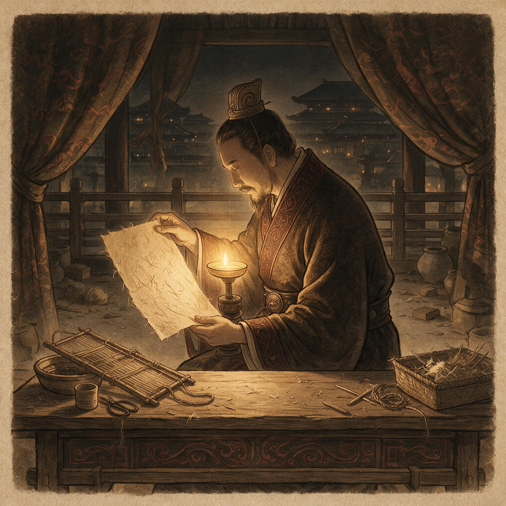

第 11 章
垂帘下的尚方
元兴元年三月十七日，尚方令蔡伦在呈送少府的《尚方御用文书承载之物监作账册》末页，用朱笔签下了自己的名字和职衔。账册封缄送出后的第十一个夜晚，他独自坐在黑暗里，指尖还记得那叠新纸的边缘——纤维在指腹下微微起伏，像湘水边的细沙，又像铁砧上刚锻出来的铁面，尚未淬火，尚未开刃，但骨子已在里面了。据《后汉书·宦者列传》所载，自古书籍文档皆用竹简，后有缣帛，然“缣贵而简重，并不便于人”。蔡伦在尚方监督宫廷物品制作，正是从接触东汉最好的手工工艺开始，改用树皮、破布、麻头和鱼网等廉价之物造纸，为纸的普及准备了条件。此刻他手中这叠纸，便是这条件的第一批果实。
赵中黄门接过纸，低头看了看。纸在午后的光线里呈现出一种温润的米白色，边缘有一点毛，但整体平整。他用手摸了摸纸面，手指在纤维上滑过去，脸上那种谨慎的空白松动了一下，露出一点不易察觉的

蔡伦在灯下审视新造纸张
AI 生成插图，非史实影像。
惊讶。“这是——什么？”
“纸。”蔡伦说。
赵中黄门把纸收好，行了礼走了。蔡伦站在正堂门口，看着他的背影消失在回廊尽头，然后回到抄纸房，继续看他的纸池。他没有跟任何人说起这件事，也没有在当天的日志里记录这次会面。但他在心里记下了一笔：纸样已经送进去了。不是通过少府，不是通过御史台，不是通过任何正式的公文渠道，而是通过一个来问话的中黄门的手，直接送进了北宫寝殿。
这不是他计划中的路径。他计划中的路径是：先完成树皮试验，再把树皮纸样连同麻皮纸样、旧布纸样、麻头纸样、鱼网纸样一起，附在呈文后面，正式呈报少府，由少府转呈尚书台，由尚书台呈送御前。这是一条完整的、合乎程序的路径，每一步都有案可查，每一环都经得起追问。但程序是给没有缝隙的时候用的。现在有了缝隙——皇帝病重，皇后临榻，尚方器物被直接问及——这条缝隙不是他凿出来的，但他可以走进去。不是绕过程序，而是在程序之外，多铺一条路。这条路更短，更直接，也更危险。
因为它不经过少府，不经过尚书台，不经过任何可以替他分担责任的人。那叠纸如果出了问题——如果着墨不匀，如果折叠破裂，如果皇后用了不满意——责任全在他一个人身上。但如果那叠纸没有出问题，如果皇后用了觉得好，如果皇帝在病榻上用它批了奏章，那这叠纸就不再只是一件尚方新制的器物，而是一件被最高权力触摸过的御用之物。这个差别，比任何规程和账册都更能保护它——和保护他。
蔡伦在抄纸房里站了很久。纸池里的浆液在微微晃动，纤维悬浮在水中，像无数细小的筋骨，等待着被竹帘捞起、压榨、晾干，成为某种从未在世上出现过的东西。他不确定自己送出去的那叠纸会带来什么。他只知道，在尚方五年，他第一次感觉到，纸的命运和他自己的命运，正在被同一根丝线牵引着，向同一个方向移动。那根丝线的另一头，系在北宫寝殿的垂帘后面。
四天之后，赵中黄门又来了。这一次他没有传话，而是直接走进尚方工坊，穿过前院，穿过兵器作坊，穿过铜器作坊，一直走到抄纸房门口。他的脚步比上一次快，脸上那种谨慎的空白还在，但空白下面多了一层东西——不是兴奋，不是紧张，而是一种知道自己正在传递重要信息的人特有的那种克制的郑重。
“蔡令，”他说，“皇后要看更多纸样。”
蔡伦正在抄纸。他的双手握着竹帘的两端，手臂上的肌肉绷紧，竹帘沉入纸池，浆液漫过帘面，然后他稳稳地把帘端起来，水从帘缝里漏下去，帘面上留下一层薄薄的湿纸膜。他把帘翻过来，将湿纸膜扣在旁边的木板上，动作不快不慢，像他做了一千次那样。
“要多少？”他问。
“皇后说，”赵中黄门顿了一下，“‘尚方所制纸样，每种各呈十张，附制法提要一份。’”
蔡伦把手在围裙上擦干净，转过身来看着赵中黄门。他没有问“皇后还说了什么”，因为他知道，这句话本身已经足够。每种各呈十张——这不是随意看看，这是要系统比较。附制法提要一份——这不是只看成品，这是要看工艺。皇后是在用管理皇家工坊的方式来对待这件事，而不是用欣赏一件新奇器物的方式来对待它。这意味着纸已经进入了她的视野，不是作为一件玩意儿，而是作为一件可以用、可以推广、可以纳入尚方常规制作的御用之物。
蔡伦点了点头。“三日之内备齐。”
赵中黄门走了之后，蔡伦在抄纸房门口站了一会儿。院子里阳光很好，工匠们在各自的作坊里忙碌，锤声、锯声、锉声混在一起，像一首没有旋律但节奏分明的曲子。他听着这些声音，脑子里却在想另一件事：制法提要。皇后要的不是纸样本身，而是纸样加上制法提要。这意味着她不仅要看到成品，还要理解成品是怎么做出来的，要把纸这件事纳入自己的知识体系，而不是仅仅把它当作一件来自尚方的贡品。这意味着纸的命运，正在从“尚方令蔡伦的个人试验”变成“皇后陛下关心的御用制作”。
这个变化太快了，快到他自己都有点不敢相信。但他在宫里三十年，知道一件事：快的事情，往往也容易翻。皇后要看纸样，这是一条向上的路，但这条路的两边都是悬崖。如果纸样送上去，皇后不满意，那这条路就断了，而且断得比从来没有这条路更彻底——因为失望比无感更能让人记住一件事。如果纸样送上去，皇后满意，但满意到要把这件事告诉别人——比如少府，比如尚书台，比如某个在朝会上有发言权的官员——那就会引来更多的目光，而那些目光里，有些不会是善意的。
蔡伦在尚方五年，太清楚一件事：一件器物一旦被最高权力看见，它就不再只是一件器物。它会变成一个符号，一个筹码，一个可以被不同的人用来做不同的事的工具。有人会用它来证明皇后的英明，有人会用它来攻击尚方的浪费，有人会用它来拉拢蔡伦，有人会用它来排挤蔡伦。纸还没有走出尚方工坊，但它的政治生命已经开始了。而他唯一能做的，就是让纸本身足够好，好到任何想要攻击它的人，都不得不在事实面前绕道走。
他用了三天。
第一天，他选了五种原料的纸样：麻皮纸、旧布纸、麻头纸、鱼网纸、楮树皮纸。每一种都是他自己亲手抄的，抄的时候他特别注意浆液的浓度和竹帘的晃动幅度，确保每一张纸的厚度均匀、纤维致密。抄完之后他把纸贴在焙墙上烘干，烘的温度比平时略低，让纸面收缩得更慢、更匀。烘干之后他把纸揭下来，对着日光一张一张地看，把那些有瑕疵的——有一处纤维团块的，有一处厚薄不匀的，有一处边缘破损的——全部挑出来，重新抄。最后每种纸他抄了不下二十张，从中选出最好的十张，叠整齐，用一块干净的麻布包好。
第二天，他写制法提要。这不是一件容易的事。他在尚方五年，写了无数份器物制作记录，但那些记录都是给工匠看的，用的是尚方内部的行话和简写，不需要解释原理，只需要记录工序。
但制法提要是给皇后看的——一个通晓经史但不熟悉工坊操作的读者。他必须把舂捣、抄纸、压榨、烘干这些工序用她能理解的语言写出来，不能太简略，简略了看不出门道；也不能太繁琐，繁琐了显得卖弄。
他写了三稿。第一稿太简，像尚方内部记录；第二稿太繁，像太学博士的考据文章；
第三稿他找到了一个合适的尺度：每一道工序写清楚做什么、用什么工具、达到什么效果，不写原理，不写比较，不写他个人的心得。他让自己退到工序后面，让工序本身说话。
第三天，他把纸样和制法提要一起装进一个木匣，木匣外面裹了一层青布，用尚方的封泥封好，交给赵中黄门。赵中黄门接过木匣的时候，蔡伦说了一句话：“请禀皇后：此物尚在试制，非为定式。若有不合圣意之处，尚方随时可改。”
赵中黄门点了点头，抱着木匣走了。蔡伦看着他的背影消失在回廊尽头，然后回到抄纸房，关上门，在案前坐下。三天没有好好睡觉，他的眼睛发涩，肩膀发僵，手指上全是纸浆干涸后留下的白色痕迹。但他没有躺下休息。他坐在那里，脑子里反复过着那十张纸的样子——每一张的厚度、颜色、纹理、边缘——像过账册上的条目，一条一条，不能有错。他不知道皇后会在什么时候打开那个木匣，不知道她会用什么样的眼光看那些纸，不知道她会用什么样的语气问什么样的问题。他只知道，他能做的事情已经做完了。剩下的，不在他手里。
四月初，皇帝的病情一度好转。朝会恢复了，虽然还是三日一次，但皇帝已经能坐起来批阅奏章。尚书台积压的文书开始流转，少府的公务也重新上了轨道。蔡伦把那份关于树皮原料的呈文正式递了上去，附了楮皮纸样三张、桑皮纸样两张、谷皮纸样两张。呈文走的是正常程序：尚方呈少府，少府转尚书台，尚书台呈御前。这一次没有遇到任何阻碍。少府卿在呈文上批了“拟准”，尚书令批了“可”，皇帝在御览之后批了一个字：“善。”
这个“善”字，蔡伦是在四月初九的上午看到的。少府派人把批复抄件送到尚方，蔡伦接过来，展开，看到那个字。墨迹浓黑，笔画有力，不像是一个久病之人写的字。他盯着那个字看了很久，然后把抄件折好，放进案头的木匣里。木匣里已经存了不少文书——账册副本、御史台问询函、少府批复抄件、纸样送出记录。这些东西按日期排好，每一份都标注了事由。这是他的习惯，从做尚方令的第一天就养成了：每一件事都要有记录，每一份记录都要有备份，每一个备份都要放在找得到的地方。不是为了将来写史，而是为了将来有人问起来的时候，他能拿出东西来。
皇帝的这个字，是对树皮原料的肯定，是对造纸工艺的肯定，也是对蔡伦个人的肯定。但蔡伦知道，这个字能保护他，也能成为靶子。在宫里，皇帝的肯定从来不是单向的恩赏，它同时是一种标记——标记这个人进入了皇帝的视野，标记这个人值得被关注，也标记这个人值得被警惕。那些在暗处看着的人，不会因为皇帝说了一个“善”字就放弃他们的打算。他们只会换一种方式，换一个时机，换一个角度。
四月十二日，邓皇后召蔡伦入北宫。
这是蔡伦第一次被单独召入北宫寝殿。传召的是赵中黄门，他在尚方正堂门口站定，说了一句“皇后召尚方令蔡伦入见”，然后就站在一旁等着。蔡伦正在查抄纸池的温度记录，听到这句话，把笔搁下，站起来整了整衣冠。他没有问为什么事，也没有带任何东西——纸样已经送过了，制法提要也送过了，如果皇后要问什么，他脑子里都有。
从尚方到北宫，要走两道宫门，穿一条复道，过一片庭院。这段路蔡伦走过很多次，但这一次不一样。以前他去北宫，是去送器物、验收修缮、核对尺寸，是工匠和主顾之间的关系。这一次他是被召见的。召见和被召见，在宫里是完全不同的两件事。前者是你去找权力，后者是权力来找你。方向不同，分量也不同。
北宫寝殿比他想象的要安静。廊下站着几个宫女和中黄门，都垂着手，不说话。赵中黄门领他走到殿门口，示意他进去。蔡伦跨过门槛，殿内光线很暗，窗户都垂着帘子，只有案上一盏灯亮着。他先看到了那盏灯，然后看到了灯旁的那叠纸——是他送来的那十张纸样，每一张都摊开了，按原料分类排好，旁边放着那份制法提要，纸面上有朱笔批注的痕迹。
然后他看到了邓皇后。她坐在案后，穿一身深青色的常服，没有戴凤冠，头发只用一根玉簪绾着。她的面容在灯光下显得很平静，不是那种刻意的、端着的平静，而是一种习惯了的、骨子里的平静——那种在宫廷里生活了九年、经历过丈夫病危、帝国飘摇之后沉淀下来的平静。她的眼睛在看他，目光不锐利，但很稳，像一潭很深的水，看不到底。
蔡伦跪下行了礼。
“起来吧。”邓皇后的声音不高，但很清楚。“赐座。”
一个宫女搬来一张小杌子，蔡伦侧身坐下。他没有说话，等着皇后开口。在宫里三十年，他知道一个规矩：被召见的人，不要先说话。不是因为害怕，而是因为你先开口，你就暴露了你最关心什么。让召见你的人先开口，你就能知道她最关心什么。
邓皇后没有让他等太久。
“你送来的纸样，本宫都看了。”她说，手指轻轻点在那叠纸上。“楮皮纸最匀，桑皮纸次之，谷皮纸最粗。制法提要也写得清楚。本宫用这五种纸各写了几个字，你看看。”
她把一张纸推过来。蔡伦站起来，走到案前，低头看。那是五张纸，每张纸上都写着同一句话：“元兴元年四月。”字迹端秀，笔画流畅，墨色匀净。五张纸上的字各有不同：麻皮纸上的字墨色微微渗开，边缘有一点毛；旧布纸上的字墨色最黑，但纸面略显粗糙；麻头纸上的字墨色偏淡，纤维纹理隐约可见；鱼网纸上的字墨色最匀，但纸面偏硬；楮皮纸上的字墨色沉稳，纸面细腻，笔画边缘干净利落，没有一丝洇墨。
蔡伦看了很久。他不是在看字，他是在看纸。每一张纸的纤维结构、表面处理、着墨性能，都在那五个字里呈现出来了。楮皮纸确实是最好的。这一点他早就知道，但现在被皇后的字迹印证了——不是用语言，而是用墨迹，用笔锋在纸面上的实际表现。
“楮皮纸可用。”邓皇后说。“但制法还要再精。纤维分离还不够细，纸面偶有颗粒。尚方能不能做得更好？”
蔡伦抬起头。“能。”
邓皇后看着他，等他说下去。
“楮皮纤维比麻皮细软，沤制时间需要加长三到四日。舂捣次数需要从现在的三百杵增加到五百杵。抄纸时浆液浓度需要降低两成，让纤维分布更均匀。烘干温度需要控制在比麻皮纸低五度的水平，防止纸面收缩过快产生褶皱。”他停了一下。“这些工序调整，尚方可以在一个月内完成试验，拿出第二批纸样。”
邓皇后听完，没有立刻说话。她把案上的纸样一张一张收起来，叠整齐，放回木匣里。然后她抬起头，看着蔡伦。
“尚方令，”她说，“你知道本宫为什么看重这件事？”
蔡伦心里动了一下。这个问题不是关于纸的，是关于纸背后的东西的。他垂下眼睛，想了一瞬，然后说：“臣不敢妄测圣意。”
“本宫不是在考你。”邓皇后的声音里多了一层东西，不是严厉，而是坦白。“皇帝病中批阅奏章，竹简太重，缣帛太贵。尚方所制之纸，轻便、廉价、着墨不洇，正合时需。这是其一。”
她停了一下。“其二，本宫听说，尚方造纸所用的原料——树皮、破布、麻头、鱼网——都是各地常见的废弃之物。若此法能推广至郡国，则天下文书承载之物，不必再依赖江南竹木与齐地缣帛。朝廷每年用于简牍缣帛的开支，可以减省三成以上。”
蔡伦听着，心跳在胸腔里沉稳地搏动。邓皇后说的每一个字，都在把纸这件事从“尚方工艺改良”推向“朝廷制度变革”。她不是在欣赏一件器物，她是在评估一项政策。她的眼光已经越过了尚方工坊的围墙，看向了整个帝国的文书系统。蔡伦想起材料中那些廉价之物——树皮、破布、麻头、鱼网——它们正是皇后口中“各地常见的废弃之物”。若此法能推广，则天下文书承载之物，不必再依赖江南竹木与齐地缣帛。
“其三。”邓皇后顿了一下，声音放低了一点，低到只有蔡伦能听见。“皇帝的身体，时好时坏。朝中有些人，已经在看风向。本宫需要一些事情，让天下人看到：朝廷还在运转，制度还在更新，皇帝和本宫还在做事。纸这件事，虽小，但关乎文书，关乎政令，关乎朝廷与郡国之间的信息往来。把它做好了，就是向天下人宣示：这个朝廷，没有停下来。”
蔡伦在那一刻明白了。邓皇后不是在给他机会，她是在给自己找一件可以做的事。皇帝病重，朝局飘摇，她作为皇后，需要在皇帝还能支撑的时候，做一些能看得见、摸得着、说得出的政绩。不是为了权力——至少不全是——而是为了证明她的存在对这个朝廷是有用的。纸，就是这样一件可以做的事。它不大，不小，刚好够。它涉及技术，涉及财政，涉及制度，涉及信息流通，涉及从宫廷到郡国的每一个文书环节。把它做好了，邓皇后就不仅在皇帝面前证明了她的能力，也在朝臣面前证明了她的价值。
而蔡伦，就是那个能帮她做好这件事的人。不是因为他是最聪明的，不是因为他是最有才华的，而是因为他在尚方五年，已经把造纸这件事从灵光一闪变成了规程、账册、入库单、试验记录、原料比对、成品检验。他手里有一套完整的、可复制的、经得起追问的工艺体系。这套体系，恰好是邓皇后需要的。
蔡伦跪了下去。“臣愿竭尽全力。”
邓皇后看着他，点了点头。“本宫知道你会。你送来的纸样和制法提要，本宫都看了。你不是在献一件奇器，你是在做一件事。本宫看得出来。”
她站起来，走到窗边，掀开帘子的一角。外面的光线涌进来，落在她脸上。她的侧脸在光里显得很年轻——她才二十五岁——但她的眼睛里有比二十五岁更深的东西。
“尚方令，”她说，没有回头，“你入宫多少年了？”
“回皇后，”蔡伦说，“三十年。”
“三十年。”邓皇后重复了一遍。“三十年前，本宫还没有出生。你在宫里，见过窦太后，见过先帝，见过皇帝，见过本宫。你见过的人，有些已经不在了，有些还在。你知道的事情，比本宫多。”
蔡伦没有说话。
“本宫想问你一件事。”邓皇后转过身来，看着他。“你在尚方做纸，做了多久？”
“一年零四个月。”
“一年零四个月。”她又重复了一遍。“这一年零四个月里，有没有人告诉过你，这件事不值得做？”
蔡伦沉默了一瞬。“有。”
“谁？”
“御史台的人。少府的人。中黄门里的人。尚书台里的人。”他停了一下。“还有一些臣不知道名字的人。”
邓皇后点了点头，像是早就料到了这个答案。“他们为什么说这件事不值得做？”
蔡伦想了想。“因为纸不是兵器，不是铜器，不是玉器，不是任何一件能让人一眼看到价值的东西。它太平常了。平常到让人觉得，不值得专门去做。”
“那你为什么还要做？”
蔡伦抬起头，看着邓皇后。他知道这个问题不是在考他。她是真的想知道。一个在宫里待了三十年的人，一个被阉割了的宦官，一个没有子嗣、没有家族、没有退路的人，为什么要把一年零四个月的时间花在一件“不值得做”的事情上。
“因为，”蔡伦说，“臣在尚方五年，见过的器物不下千种。有些器物做出来，当天就被送进库房，再也没有人用过。有些器物做出来，摆在殿上，每天被人看见，但没有人知道是谁做的。纸不一样。纸不是用来被看见的。纸是用来承载别的东西的——文字、政令、账册、历史。它本身不发光，但它能让别的东西发光。臣做纸，不是为了让人看见纸，而是为了让人看见纸上面的东西。”
邓皇后看着他，很久没有说话。然后她笑了一下。不是那种礼节性的、端着的微笑，而是一种很淡的、从眼角一闪而过的笑——像冬天湖面上的一道裂纹，瞬间就消失了，但你知道冰层下面有水在流动。
“尚方令，”她说，“你说得对。纸不是用来被看见的。但做纸的人，有时候需要被看见。”
她走回案前，拿起那叠纸样中的一张——楮皮纸——放在灯下看了看。“第二批纸样做好之后，直接送来北宫。不必经过少府。”
蔡伦心里一紧。不必经过少府。这意味着纸这件事，从尚方到北宫，变成了一条直线。少府、尚书台、御史台——所有这些中间环节，都被绕过去了。这是保护，也是风险。保护是因为少府的人不能再卡他的呈文，不能再查他的账册，不能再在程序上做手脚。风险是因为没有中间环节的缓冲，他直接暴露在皇后面前。纸样好，是他的功劳；纸样不好，是他的过失。没有别人可以替他分担。
但邓皇后接下来的话，让他知道这个风险比他想的更大。
“本宫听说，”邓皇后把纸放回案上，语气变得轻了，轻得像是在说一件无关紧要的事，“少府有人对你的账册感兴趣。”
蔡伦的后背微微绷紧。“是。御史台曾来函核查尚方新增监作项目开支。臣已将造纸试验的物料领用、人工和成品记录独立成册，封送少府备查。”
“本宫知道。”邓皇后说。“那份账册，少府转了一份抄件到北宫。本宫看了。”
蔡伦没有说话。
“账册做得很细。”邓皇后说。“细到让人挑不出毛病。但挑不出毛病，不代表没有人想挑毛病。你在尚方做纸，用的是尚方的人、尚方的料、尚方的场地。这些东西，说到底，是朝廷的东西。朝廷的东西，谁都可以用，谁都可以查。今天本宫说可以用，明天换了别人，也不可以用。”
她看着蔡伦，目光平静。“所以你要快。在别人找到理由说不可以之前，把这件事做到让人无法说不可以。”
蔡伦从北宫出来的时候，天已经暗了。他走在复道上，脚步不快不慢，和来时一样。但他的脑子里在转，转得比来时快得多。邓皇后说的每一句话都在他脑子里回响，像抄纸池里的浆液，一圈一圈地荡开，每一圈都碰到池壁又弹回来，和其他圈交织在一起，形成一种复杂的、不断变化的纹样。
“不必经过少府。”“你要快。”“做到让人无法说不可以。”
这三句话，一句比一句重。第一句是授权，第二句是警告，第三句是标准。邓皇后不是在给他一个轻松的差事，她是在给他一个必须在限定时间内完成的任务，而这个任务的成败，不仅关系到他个人的命运，也关系到她在皇帝病重期间的权威。如果他做好了，纸就会成为邓皇后临朝称制期间的一项标志性成果——一项看得见、摸得着、可以在朝堂上公开宣布的制度改良。如果他做不好，或者做得不够快，被少府或御史台的某个人找到了阻止的理由——浪费、逾制、无用、标新立异——那邓皇后不会保他。她会退回去，退到垂帘后面，让这件事像从来没有发生过一样。
这就是制度依附的本质。蔡伦在尚方获得的每一寸空间，都不是来自他的专业权威，而是来自皇权的允许。邓皇后允许他绕过少府直接呈送纸样，这个允许可以今天给，也可以明天收。给他的时候不需要理由，收回去的时候也不需要理由。他唯一能做的，就是在这个允许还存在的时候，把纸做到足够好、足够快、足够让人无法说不可以。用成果来锁定授权，用事实来巩固信任——这是他在这个位置上唯一能走的棋。
他走回尚方的时候，天已经全黑了。工坊里的工匠们已经散了，只有抄纸房还亮着灯。他推门进去，值夜的老匠人正在往纸池里加水，看见他进来，放下水桶行了礼。蔡伦点了点头，走到纸池边，低头看池里的浆液。浆液在灯光下泛着微微的乳白色，纤维悬浮其中，缓慢地旋转，像星云，像水草，像某种正在孕育中的、还没有名字的东西。
“明天开始试第二批楮皮纸。”蔡伦说。“沤制时间加三天。舂捣加到五百杵。浆液浓度降两成。烘干温度降五度。”
老匠人愣了一下。“令君，这些改动……要不要先做小样？”
“不用。”蔡伦说。“直接上池。”
“可是——”
“没有可是。”蔡伦转过身，看着老匠人。他的脸上没有表情，但眼睛里有某种东西让老匠人把后面的话咽了回去。“十天之内，我要拿出二十张楮皮纸样。每一张都要比上一批好。每一张都要经得起日光看，经得起墨迹试，经得起任何人用任何理由挑毛病。”
老匠人看着他，慢慢点了点头。“明白了。”
蔡伦在抄纸房里又待了很久。他把纸池的温度、浆液的浓度、竹帘的孔隙、焙墙的温差——这些数据在脑子里过了一遍又一遍，像铁官家的匠人在锻一件铁器之前要把火候、锤法、淬水时间全部想清楚一样。他在耒阳铁官家长大，从小看的就是这个：一个好的匠人，在动手之前，已经把整个流程在脑子里走了无数遍。走通了，才动手。走不通，就继续想。想不是犹豫，想是动手的一部分。
他最后在案前坐下，铺开一张麻皮纸，边缘裁得不齐的那种，提起笔，写下了第二批楮皮纸的试验方案。不是呈文，不是制法提要，不是给任何人看的东西，是他自己用的。字迹小而密，一行一行，像账册上的条目，但比账册更细。每一道工序的起止时间、用料数量、检验标准、可能出现的偏差和应对方法——他把能想到的都写了下来。写完之后他把纸折好，放进袖子里，站起来，吹灭了灯。
月光从窗户照进来，落在纸池上。池水安静，纤维沉淀，一切都像是在等待。蔡伦站在池边，低头看着那一片微微反光的水面。他在想邓皇后最后说的那句话——“做到让人无法说不可以”。这句话里的每一个字他都懂，但合在一起，他花了很长时间才真正理解它的意思。
不是做到完美。完美是做不到的，总会有人找到瑕疵。不是做到无可替代。无可替代是危险的，因为无可替代的人最终都会被除掉。是做到让人无法说不可以——让人找不到一个合理的、公开的、能在朝堂上说出口的理由来否定这件事。让每一个想要否定它的人，都不得不在事实面前绕道走。
这就是纸骨。不是纸的骨，是做纸这件事的骨。是规程、账册、试验记录、原料比对、成品检验——这些一层一层铺在纸周围的东西。它们不是纸本身，但没有它们，纸就只是一张薄薄的纤维膜，一撕就破。有了它们，纸就有了骨。有了骨，就能承重。能承重，就能在权力的缝隙里活下去，长出来，变成一种没有人能轻易抹去的东西。
蔡伦在黑暗中站了很久。然后他转身推门出去，走到廊下。那几捆楮树皮还在那里，在月光下泛着湿润的暗光。他蹲下去，又摸了一截树皮。这一次树皮的手感不一样了——沤了这些天，纤维已经开始松软，皮面与韧皮之间有了分离的迹象。明天就可以切碎入臼。
他站起来，拍了拍手。院子外面，洛阳城的夜正在深下去。北宫的灯火还亮着，那是邓皇后在批阅奏章。南宫的灯火也亮着，那是尚书台在连夜处理积压的文书。在这两片灯火之间，尚方工坊的院子是暗的，只有抄纸房门口挂着一盏小灯，在夜风里微微晃动。
蔡伦看着那盏灯，忽然想起了一件事。三十年前，他十二岁，在耒阳铁官家的院子里，也是这样一盏灯。那天晚上他被父亲叫到跟前，父亲告诉他，朝廷的人来了，要选他入宫。他记得父亲说话时的声音——不是悲伤，不是愤怒，而是一种很平的、像是在陈述一件铁器规格的声音。他还记得自己当时没有哭。他只是看着院子里那盏灯，看着灯火在夜风里晃动，心里想：以后再也看不到这盏灯了。事实上，蔡伦被阉割入宫的年龄在东汉并不算早。据史学界分析，东汉时期的太监平均净身年龄在9.6岁。他十二岁入宫，比平均年龄稍大，但已足够早地将自己交付给宫廷的秩序。
三十年过去了。他看了更多的灯——北宫的灯，南宫的灯，尚方工坊的灯，抄纸房的灯。每一盏灯都照亮不同的东西，但没有一盏灯是替他亮的。他必须自己走到灯下面去，让灯照见他，也让他看见灯后面的人——那些掌握着灯的人，那些能决定灯亮还是灯灭的人。
现在，北宫的那盏灯照过来了。不是因为他走到了灯下面，而是因为灯后面的人——邓皇后——需要他站在这里。他站在这里，不是因为他是蔡伦，而是因为他是尚方令，是那个能把树皮、破布、麻头、鱼网变成纸的人。他手里的纸，恰好是邓皇后需要的。
这个“恰好”，不是命运，不是偶然，是他在尚方五年一点一点做出来的。从麻皮到旧布，从旧布到麻头，从麻头到鱼网，从鱼网到树皮——每一次试验，每一份记录，每一张纸样，都是在为这个“恰好”做准备。他不知道这个“恰好”会在什么时候来，他只知道它一定会来，因为纸这件事，迟早会被人看见。问题只是：被人看见的时候，它够不够好。
现在它被人看见了。被邓皇后看见了。被那个垂帘后面的人看见了。
蔡伦转过身，走回屋里，关上门。案上那叠纸还在，边缘裁得不齐，纸面在黑暗中泛着微微的白。他伸手摸到纸面，指尖沿着纸边滑过去。纸面干燥，微凉，纤维在指腹下有一种细微的粗糙感，像铁砧上新锻出来的铁面，还没有经过打磨，但骨子已经在里面了。
他把手收回来，在黑暗中坐了很久。明天要试第二批楮皮纸。后天要重新校准浆液浓度。大后天要写新的制法提要，直接呈送北宫。这些事情排在他脑子里，一件一件，清清楚楚。但在这之外，还有一件事，比所有这些事都更大、更重、更不可回避。
邓太后成了他最重要的政治保护人。这一层保护，把他从少府的账册纠缠里捞了出来，把御史台的目光挡了回去，给了他在尚方继续做纸的空间。但这一层保护也是一条锁链。它把蔡伦的命运和邓太后的政治生命绑在了一起。邓太后在，他就在。邓太后不在——或者失势，或者被架空，或者在皇帝驾崩之后被新的权力中心排挤——他就不在。不是不在尚方，是不在这个世界上。他想起史料中那个冰冷的结局：邓太后驾崩后，汉安帝亲政，蔡伦被命令到廷尉那里去自首。为了避免受辱，他在洗浴全身并换上整洁的衣冠后服毒自杀。那个结局此刻还很遥远，但它的阴影已经投射在这条锁链上。
这不是他选的。但也不完全不是他选的。他选了做纸，选了把纸样送入北宫，选了在邓太后面前说出“臣愿竭尽全力”那五个字。每一个选择都是他自己做的，每一个选择都把他往这个方向上推了一步。他不是不知道风险。他只是没有别的路。一个宦官，一个没有子嗣、没有家族、没有退路的人，在宫廷里活下去的唯一方式，就是让自己被需要。被皇帝需要，被皇后需要，被任何一个掌握权力的人需要。需要的程度越深，活着的空间就越大。但需要的程度越深，绑定的程度也越深。绑定到最后，你就是那个人的一部分。那个人倒下的时候，你会先落地。
这就是蚕室影。三十年前在蚕室里留下的那道影子，从来没有离开过他。它跟着他从小黄门走到中常侍，从中常侍走到尚方令，从尚方令走到邓太后的垂帘前。它不会消失，只会变形。有时候它是一道账册上的墨迹，有时候它是一封御史台的问询函，有时候它是邓太后的一句“不必经过少府”。每一次变形，都让他离权力更近一步，也让他离安全更远一步。
蔡伦在黑暗中闭上眼睛。他听见远处传来更鼓的声音，一下，两下，三下。夜正在过去。明天会来。树皮在廊下等着，纸池在抄纸房里等着，竹帘在墙上挂着等着。他必须睡一会儿。明天还有五百杵要舂，还有二十张纸样要抄，还有一份制法提要要写。
他站起来，走到榻边，和衣躺下。月光从窗缝里漏进来，落在他的脸上。他的面容在月光下显得很安静，眼角的皱纹像纸面上的纤维纹理，细密而深刻。他闭着眼睛，呼吸均匀，看起来像是睡着了。但他的右手微微蜷着，拇指和食指轻轻摩挲，像是在捏着一张并不存在的纸，试探它的厚度，感受它的纤维，判断它的骨子够不够。这个动作在他醒来之前不会停止。
而在他醒来之后，他要面对的事情比第二批楮皮纸更复杂：邓太后的庇护给了他空间，但也给了他新的对手——那些在垂帘后面争夺同一束光照的人，那些不希望看到太后权威通过任何一件具体政绩得到巩固的人，那些已经习惯了在皇帝和太后之间的缝隙里生存、不希望缝隙被任何东西填平的人。这些人不会直接攻击纸。纸太具体了，攻击它需要专业知识，而他们没有。他们会攻击别的东西——程序、制度、先例、祖制——用那些抽象的、堂皇的、让人无法反驳的语言，把纸这件事重新拖回争议的泥潭里。
蔡伦知道他们会来。他只是不知道他们会从哪个方向来。这个不知道不会变，也不能变。因为一旦他以为自己知道了，以为自己安全了，那一刻就是他最危险的时候。在宫里三十年，他见过太多人死在“以为自己安全了”的那一刻。他不会做那些人。
他在黑暗中翻了个身，面朝墙壁。墙是夯土筑的，表面抹了一层白灰，在月光下泛着微微的灰白色。他盯着那面墙，脑子里忽然闪过一个念头——一个关于纸的念头，一个他在这一年零四个月里从来没有想过的念头。
纸能不能更白？
他睁开了眼睛。这个念头像一颗火星，落在他脑子里那片干燥的纤维上，瞬间就烧了起来。楮皮纸是米白色的，麻皮纸是灰白色的，旧布纸是褐白色的。它们都能着墨，都能承载文字，但它们的颜色——他忽然意识到——本身就是一种局限。缣帛是白的。竹简刮去青皮之后是淡黄色的。纸的颜色介于两者之间，既不白得耀眼，也不黄得温润。如果在纸浆里加入某种东西，能不能让它更白？石灰？草木灰？还是别的什么？
他在黑暗中坐了起来。这个念头太大，大到他不确定自己能不能做到。但他知道一件事：如果他能做到——如果他能做出一张比缣帛更白、比竹简更轻、比任何一种现有的书写材料都更便宜、更容易制作的纸——那他就真的做到了邓太后说的那句话。
让人无法说不可以。
蔡伦在黑暗中坐了很久。然后他站起来，走到案前，点起了灯。灯光跳了一下，亮了。他铺开一张纸，拿起笔，在纸上写了四个字：“纸色求白。”
他把笔搁下，看着这四个字。字迹在灯光下显得很黑，纸面在灯光下显得很黄。但他不在乎。他在乎的是这四个字后面那条路——那条他还没有走过的路，那条可能通往更大的空间也可能通往更深的危险的路。
他吹灭了灯。月光重新涌进来，落在那四个字上。字迹在月光下变成了深灰色，像铁砧上冷却了的铁痕，不发光，但骨子已经在里面了。
尚方工坊的夜很静。北宫的灯还亮着。垂帘后面的人还没有睡。她在等他的第二批纸样。他在等天亮。两个等待之间，隔着三道宫墙和两条复道，隔着三十年的宫廷岁月，隔着一层薄薄的、正在成形中的、还没有被任何人命名的东西。
纸。